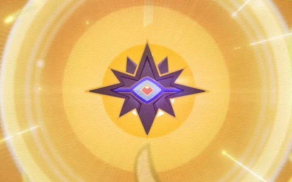

Sumeru · Gods & Divinity
King Deshret
King Deshret ruled the desert civilization of ancient Sumeru and formed an alliance with the Dendro Archon and Nabu Malikata. The game’s records connect his legacy to the ruins and projects scattered through the desert.

A ruler of ancient Sumeru
King Deshret ruled a desert civilization in ancient Sumeru. His people built cities and technologies whose remains are still scattered across the desert. The game introduces his past through ruins, tablets, quests, and the stories of people who inherited his legacy.
Deshret is often called the Scarlet King. His history is tied to two important allies: the Dendro Archon and Nabu Malikata, the Goddess of Flowers. Their alliance shaped the desert’s past, but the three did not have identical goals.
The alliance and its loss
The desert records describe a period when Deshret, Nabu Malikata, and the Dendro Archon were connected by friendship and shared plans. Nabu’s death left Deshret grieving, and the later history of the desert reflects the cost of that loss.
Different sources describe the same era in different ways. Some are formal inscriptions, some are stories, and some are memories. Together they let players reconstruct the past, but no single fragment explains every decision Deshret made.
The Eternal Oasis
The Eternal Oasis is a place tied to Deshret’s memory of Nabu Malikata. Its story shows how grief can shape a ruler’s use of power and how a personal promise can become part of a nation’s landscape.
The quests in the desert reveal this place through exploration rather than a single exposition scene. Players piece together its meaning from architecture, dialogue, and the memories preserved there.
Reading Deshret’s legacy
King Deshret’s technology and history are not the same thing as the Akademiya’s later claims about him. The game repeatedly asks readers to compare official explanations with older records and what the ruins actually show.
The three Magi, Gurabad, and the desert’s jinn traditions are related branches of this history. Follow each source separately before combining them into one timeline.
This is an original CoreGG reading guide, not an official HoYoverse article or a reproduction of the game text. Source links below identify the records used so you can check the original context.
Sources & references
Check these sources for the original game text and reference trail.